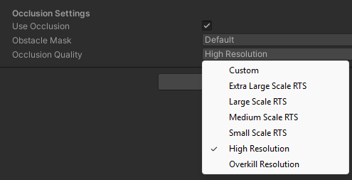
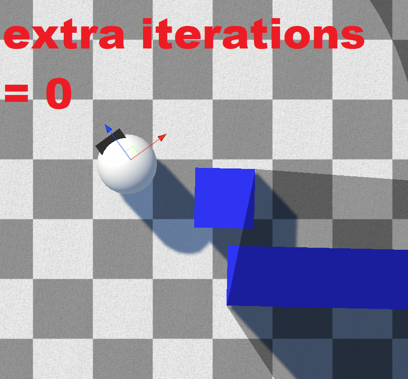
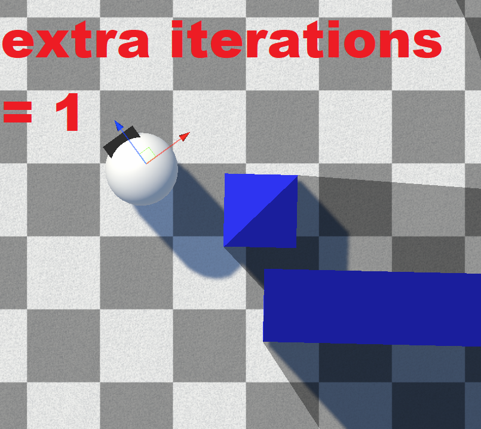

Occlusion Quality
Occlusion Quality is set per-revealer on the Revealer 3D / Revealer 2D component. It trades raycast accuracy for performance. Higher quality means more accurate edge detection and fewer missed gaps, at a higher raycast cost.
Disabling Occlusion
If a revealer doesn't need to be blocked by obstacles, disable Use Occlusion. Without occlusion, a revealer is essentially a cheap circle/cone — you can render thousands of non-occluding revealers with minimal cost.
Quality Presets
The Occlusion Quality preset picks a balanced set of raycast settings for you:

| Preset | Use for |
|---|---|
| Extra Large Scale RTS | Huge worlds with very many revealers — lowest cost. |
| Large Scale RTS | Large RTS-style worlds with many revealers. |
| Medium Scale RTS | Mid-sized worlds. |
| Small Scale RTS | Smaller worlds / fewer revealers. |
| High Resolution | High-accuracy line of sight (default). |
| Overkill Resolution | Maximum accuracy, highest cost. |
| Custom | Expose and tune the individual raycast settings yourself. |
Custom Settings
Selecting the Custom preset exposes the underlying raycast parameters:
| Property | Type | Default | Description |
|---|---|---|---|
| Raycast Resolution | float (0.05–2) | 0.5 | Ray density. Higher resolves more detail at a higher cost. |
| Num Extra Iterations | int (0–10) | 4 | Refinement passes around edges. Raise this if a revealer misses edges. |
| Num Extra Rays On Iteration | int (1–5) | 3 | Extra rays fired per refinement pass. |
| Resolve Edge | bool | true | Binary-search the precise edge of obstacles. |
| Max Edge Resolve Iterations | int (1–30) | 10 | Edge binary-search steps. More = more accurate at distance, more raycasts. |
| Max Acceptable Edge Angle Difference | float (0.001–1) | 0.005 | Angle tolerance for edge detection. Lower = more accurate, more raycasts. |
| Edge Dst Threshold | float (0.001–1) | 0.1 | Distance threshold for detecting an edge between two rays. |
| Double Hit Max Angle Delta | float | 15 | Maximum angle delta used when classifying double-hit edges. |
Raising Num Extra Iterations resolves edges that a low value misses:

Extra Iterations = 0 — note the missed edge
Extra Iterations = 1 — the edge is resolvedTip
If a revealer misses some edges, set Occlusion Quality to Custom and increase Num Extra Iterations. See Debugging.